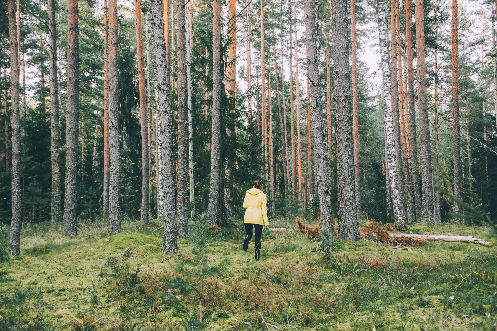

I disse tider er det få løp. Det må vi gjøre noe med! Det er gøy å komme seg ut og løpe på nye stier. Jeg har
derfor
laget et lite månedsløp der man kan delta når man måtte
ønske. Jeg har laget et segment og en rute på Strava. Den som løper ruten
raskest i løpet av måneden vinner! Det er om å gjøre å "treffe" på ruten for
at segmentet skal bli registrert. Det er en av "orienteringsutfordringene" med løpet. Man må også laste opp økten på
Strava for
at forsøket skal bli godkjent. Les kartet nøye, og gjør gjerne et forsøksløp
først for å se om du treffer segmentet. Det er lov å løpe så mange ganger
man vil. Et tips kan være å laste ned GPX filen og laste den opp på GPS klokken. Hvis du ikke har en slik klokke,
kan du laste ned GPS viewer appen, og legge den inn der. Velg kart: OpenStreet map. Lykke til!
